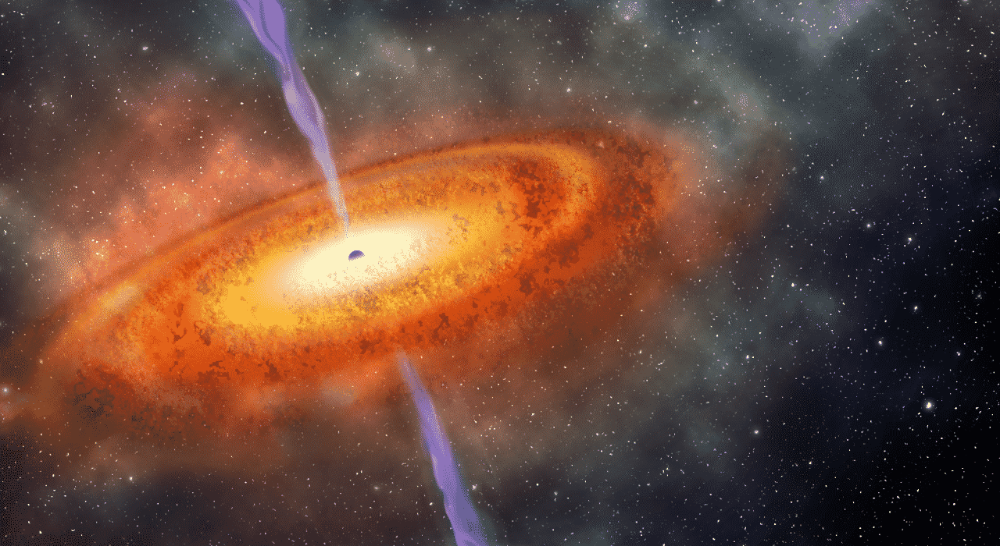
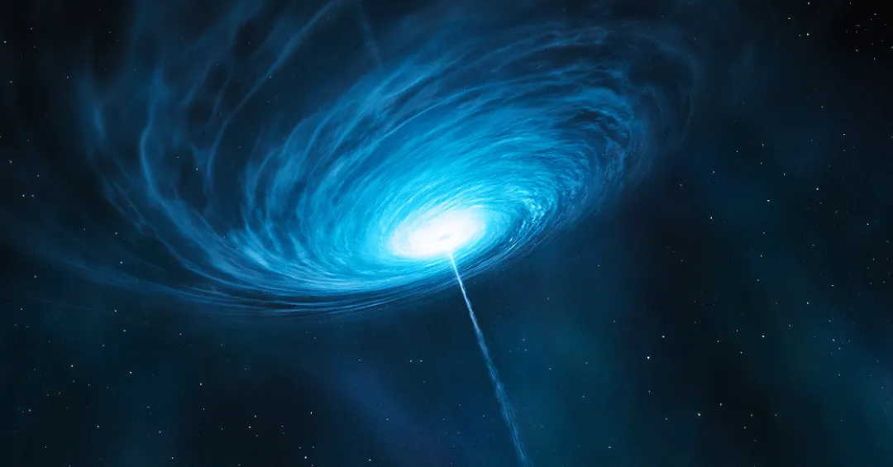

Quasar
Um quasar, abreviação de "quasi-stellar radio source" (fonte de rádio quase estelar), é uma classe de objetos astronômicos extremamente energéticos e distantes. Eles são associados aos núcleos galácticos ativos, onde um buraco negro supermassivo está engolindo matéria a uma taxa extraordinária. Quando a matéria é consumida pelo buraco negro, libera uma enorme quantidade de energia, gerando emissões intensas de radiação em várias faixas do espectro eletromagnético, incluindo rádio, luz visível, ultravioleta, raios-X e raios gama.
Os quasares são alguns dos objetos mais luminosos do universo, muitas vezes brilhando mais do que milhares de vezes toda uma galáxia de estrelas. Eles foram descobertos na década de 1960 e desempenharam um papel fundamental no estudo da cosmologia, ajudando os cientistas a entender a evolução das galáxias e a natureza dos buracos negros supermassivos.
Como um quasar é formado?
Os quasares se formam nos núcleos galácticos onde há a presença de buracos negros supermassivos. A formação de um quasar envolve vários processos astrofísicos complexos, mas em termos gerais, segue um padrão semelhante ao seguinte:
- Formação do buraco negro supermassivo: O primeiro passo é a formação do buraco negro supermassivo no centro da galáxia hospedeira. Esses buracos negros podem se formar através do colapso gravitacional de grandes nuvens de gás e poeira, ou pela fusão de buracos negros menores durante a evolução galáctica.
- Acúmulo de matéria no disco de acreção: Uma vez que o buraco negro supermassivo está presente, ele começa a atrair matéria circundante, como gás e poeira, em um disco de acreção. Este disco é formado pela gravidade do buraco negro, onde a matéria orbita em espiral em direção ao buraco negro central.
- Aquecimento e emissão de radiação: À medida que a matéria cai em direção ao buraco negro, ela se aquece devido à fricção e colisões dentro do disco de acreção. Esse processo libera uma quantidade incrível de energia na forma de radiação em todo o espectro eletromagnético, desde rádio até raios gama.
- Formação do jato relativístico: Alguma fração da matéria que cai no buraco negro é lançada para fora em jatos relativísticos, que se estendem por grandes distâncias além do núcleo galáctico. Esses jatos são formados por campos magnéticos gerados no disco de acreção e processos físicos complexos envolvendo a interação entre o buraco negro e o material circundante.
- Emissão intensa de luz: Com o aquecimento do disco de acreção e a formação dos jatos relativísticos, os quasares se tornam fontes extremamente luminosas de radiação. Eles podem brilhar mais do que milhares de galáxias inteiras de estrelas e podem ser observados a grandes distâncias no universo.
Esses processos combinados resultam na formação e na natureza altamente energética dos quasares, que desempenham um papel fundamental na evolução das galáxias e na compreensão da astrofísica de alta energia.
Esta página foi editada pela última vez às 03h09min de 12 de março de 2024.
Este texto é disponibilizado nos termos da licença Atribuição-CompartilhaIgual 4.0 Internacional (CC BY-SA 4.0) da Creative Commons; pode estar sujeito a condições adicionais. Para mais detalhes, consulte as condições de utilização.